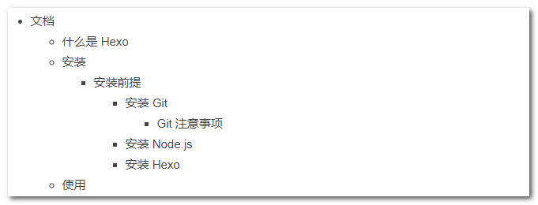
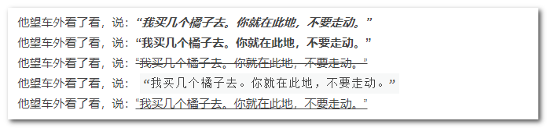
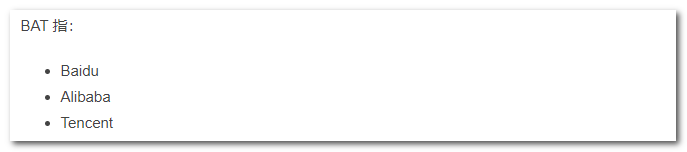
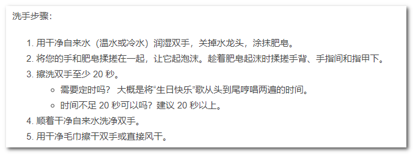
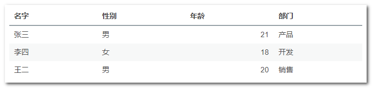
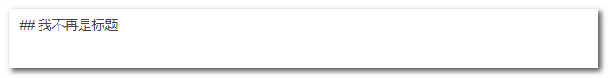
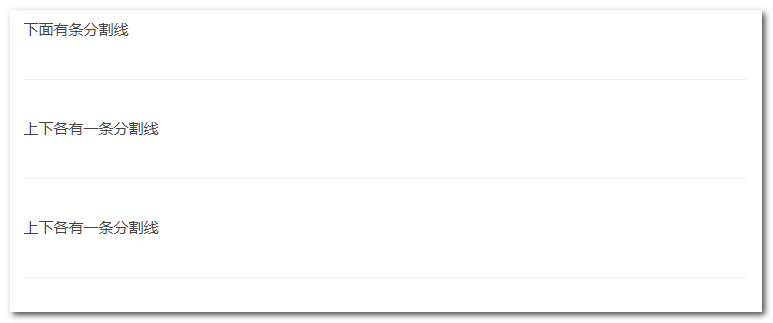
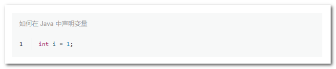

Hexo：Markdown 简明语法手册
条评论Markdown 语法简明便捷，既弥补了传统纯文本缺少样式的不足，又降低了传统 Word、HTML 等样式文本的技术门槛，自 2004 年被 John Gruber 创造以来，得到一定范围的传播和使用。2012 年 Github 强势崛起，并官方推荐 Markdown 格式，这几年得以广泛传播，甚至衍生出了林林总总数十种版本 / 变体。不过，今天我只谈 Hexo 相关内容，Hexo 默认自带的 Markdown 渲染器为hexo-renderer-marked，本文就是对其支持语法的一个总结。
由于暂时用不上数学公式，本文 不包含 LaTeX 公式 相关语法。
分级标题
语法
1 | # { 一级标题 } |
以 # 开头，以标题内容结尾，中间填充至少一个Space。标题共有 6 级。一级标题和二级标题也可以使用如下语法：
1 | { 一级标题 } |
1 | { 二级标题 } |
示例
1 | # 中华人民共和国 |
效果
层级列表
语法
1 | * { 一级目录名称 } |
层级列表每下一级的缩进都要比上一级多 2 个 Space 或 1 个Tab，且第一级前面不可超过 3 个空格。层级列表一般仅用一、二、三级列表，第一级的标识为实心圆点，第二级的标识为空心圆点，第三级的标识为实心方点。不过理论上可以有无数层级，但从第三级开始层级标识均为实心方点。
示例
1 | * 文档 |
效果

斜体 / 粗体 / 删除线 / 高亮
语法
1 | *{ 斜体内容 }* |
示例
1 | 他望车外看了看，说：*“我买几个橘子去。你就在此地，不要走动。”* |
效果

按说斜体和粗斜体是两码事，后者需要嵌套，但这里兴许是我这套主题的缘故，斜体自动加粗了。
引用
语法
1 | > { 引用内容 } |
示例
1 | > 他望车外看了看，说：“我买几个橘子去。你就在此地，不要走动。” |
效果
列表
无序列表
语法
1 | * { 列表 1 内容 } |
以 * 或+或 - 开头，以列表内容结尾，中间填充至少一个Space。标识为实心圆点。
示例
1 | BAT 指： |
效果

有序列表
语法
1 | 1. { 列表内容 1} |
全部使用 1.，会自增。也可使用1.、2.、3. 这样手动指定序号。
示例
1 | 洗手步骤： |
效果

任务列表
语法
1 | - [_] {（未完成）任务名称 } |
任务框需要配合有序或无序列表使用，故列入列表章节。中括号 [] 表复选框。若表示 未完成 则[和 ] 之间必须有且仅有一个 Space，若表示 完成 则[和 ] 之间输入一个字母 x。右中括号] 和任务名称 之间至少有一个Space。
示例
1 | - [_] 跑步 |
效果
图片 / 音频 / 视频
语法
1 |  |
静态图、动态图、视频和音频都是一样的引用方式，只是音频没写样式很丑。
示例
1 |  |
效果

超链接
行内式
语法
1 | [{ 链接文本 }]({ 链接 } {title 内容 }) |
[]里为链接文字。()里前者为链接地址，后者为链接的 title 属性（链接的 title 属性：鼠标悬停在链接上时浮现的悬浮框的内容），后者非必须。链接地址和链接的 title 属性之间需至少有一个Space。
示例
1 | [百度](http://www.baidu.com) |
效果
自动连接
语法
1 | <{ 链接或 Email}> |
直接在 <> 之间输入链接或 Email。
示例
1 | <http://www.baidu.com/> |
效果
锚点
网页中，锚点其实就是 页内超链接 ，也就是链接本文档内部的某些元素，实现当前页面中的跳转。比如我在本节的标题写下一个锚点，在目录中写下对应链接，点击链接就能跳过来。
语法
1 | [{ 链接文字 }](#{index}) |
跟超链接同理，只是链接地址改为锚点元素的 id 属性值。标题可省。
注意：div只是这里演示，任何 HTML 元素均可。
示例
1 | [第一句](#41)，[第二句](#42)，[第三句](#43) |
效果
表格
符号写法
语法
1 | |{ 表头 1}|{ 表头 2}|{ 表头 3}| |
|控制分列，-控制分行，:控制对齐方式。
第一行为 表头行 ，使用竖线符将各表头隔开，此外最前和最后表头两侧分别有个竖线符将整体框起来。
注意：表格 首行的前一行 必须 留空 ，否则符号写法的表格无法生效。
第二行为 控制行 ，要求竖线符的数量和表头行一致，且每个竖线之间至少有一个中划线符。
第三行及以下为 数据行 ，要求竖线符的数量和表头行一致，每两个相邻的竖线符之间是表格数据。
表格默认左对齐。在第二行可以使用:（冒号）搭配中划线符主动控制对应列内容的对齐方式。两个竖线符之间为：
:-：表示左对齐-或:-:：表示中对齐-:：表示右对齐
注意：无论是否主动控制对齐方式，控制行的每一列都至少要有一个中划线符。
示例
1 | | 名字 | 性别 | 年龄 | 部门 | |
效果 
注意：此处截图表格风格样式与 Hexo 默认格式不同，这取决于 Hexo 的主题。
HTML 写法
语法
1 | <table> |
Markdown 中的表格还可以用 HTML 标签的形式来写。跟 符号写法 最大的区别主要是 HTML 写法 虽然无法控制整列的对齐方式，但可以单独控制每个单元格的对齐方式。控制对齐方式的方式是给需要控制元素添加align 标签，例：
<th align="middle"><td align="left"><td align="right">
示例
1 | <table> |
效果

注意：此处截图表格风格样式与 Hexo 默认格式不同，这取决于 Hexo 的主题。
注释
语法
1 | \{ 注释内容 } |
反斜杠后不加空格紧跟注释内容即可注释。
示例
1 | \## 我不再是标题 |
效果

分割线
语法
1 | --- |
在一行起始使用 *** 或 --- 或 ___ 表示分割线。
示例
1 | 下面有条分割线 |
注意：由于 --- 还用于二级标题，因而在使用这种方式表分割线时，其前一行必须留空。
效果

代码块
行内代码块
语法
1 | `{ 代码部分 }` |
使用 `（重音符）框起来的部分为代码块。
重音符：半角状态下，按住 Shift 键，同时按下键盘字母区域的数字 1 的左侧相邻按键，输出符号即为重音符。
由于重音符是个特殊的控制字符，代码块内 原样输出 重音符（两个重音符中间输入重音符）无法直接实现，但可通过其它方式实现，分以下几种情况：
- 如果两个重音符中间的内容除了包含重音符还 含有其它内容，则在最外层需要用两个连续重音符夹起来。
- 如果两个重音符中间的内容 只包含重音符，没有其它内容，则分以下情况：
- 如果两个重音符中间的重音符 只有一个，则除了用两个连续重音符夹起来以外，作为内容的这一个重音符两侧必须至少各有一个空格。
- 如果两个重音符中间的重音符 只有两个，分两种情况：
- 两个重音符 连续，我还没有找到办法原样输出这两个重音符。
- 两个重音符 不连续（即两个重音符之间有空格），则将作为内容的两个重音符看做一个整体，这个整体的两侧必须至少各有一个空格。
- 如果两个重音符中间的重音符有 两个以上，则除了用两个连续重音符夹起来以外，将作为内容的多个重音符看做一个整体，这个整体的两侧必须至少各有一个空格。
示例
1 | 今天我们来了解一下 `Java` 的语法规则。 |
效果
多行代码块
语法
1 | ''' {type} {explain} |
注意：由于多行代码块的特殊性，无法在代码块内输入三个连续的重音符，这里用 单引号代表重音符 。
在代码的前后各起一行，只输入连续的三个重音符即可表示代码块。在第一行的三个重音符后空一格可指定 代码语言 （可选），不区分大小写。再空一格可指定 代码块标题（可选），可用单引号 / 双引号括起来，不括也行。
示例
1 | ''' java 如何在 Java 中声明变量 |
效果

特殊转义字符
在编写 Markdown 时，想要原样输出一些控制字符就需要先对其 转义，通常的做法是在待转义字符前添加反斜杠符\，但有时这种方法会失效（具体哪些清空未有总结），稳定原样输出的方式是直接使用特殊字符的编码，对应如下：
常用 HTML 特殊字符编码对照表
| 特殊符号 | 命名实体 | 十进制编码 | 中文名称 | 英文名称 |
|---|---|---|---|---|
| - | − | - | 减号 | Minus sign |
| ! | 无 | ! | 惊叹号 | Exclamation mark |
| " | " | " | 双引号 | Quotation mark |
| # | 无 | # | 数字标志 | Number sign |
| $ | 无 | $ | 美元标志 | Dollar sign |
| % | 无 | % | 百分号 | Percent sign |
| & | & | & | 地址符 | Ampersand |
| ' | 无 | ' | 单引号 | Apostrophe |
| ( | 无 | ( | 左小括号 | Left parenthesis |
| ) | 无 | ) | 右小括号 | Right parenthesis |
| * | 无 | * | 星号 | Asterisk |
| + | 无 | + | 加号 | Plus sign |
| / | 无 | / | 斜杠 | Slash |
| < | < | < | 小于号 | Less than |
| = | 无 | = | 等号 | Equals sign |
| > | > | > | 大于号 | Greater than |
| ? | 无 | ? | 问号 | Question mark |
| @ | 无 | @ | at 符 | Commercial at |
| [ | 无 | [ | 左中括号 | Left square bracket |
| \ | 无 | \ | 反斜杠 | Reverse solidus (backslash) |
| ] | 无 | ] | 右中括号 | Right square bracket |
| { | 无 | { | 左大括号 | Left curly brace |
| | | 无 | | | 竖线 | Vertical bar |
| } | 无 | } | 右大括号 | Right curly brace |